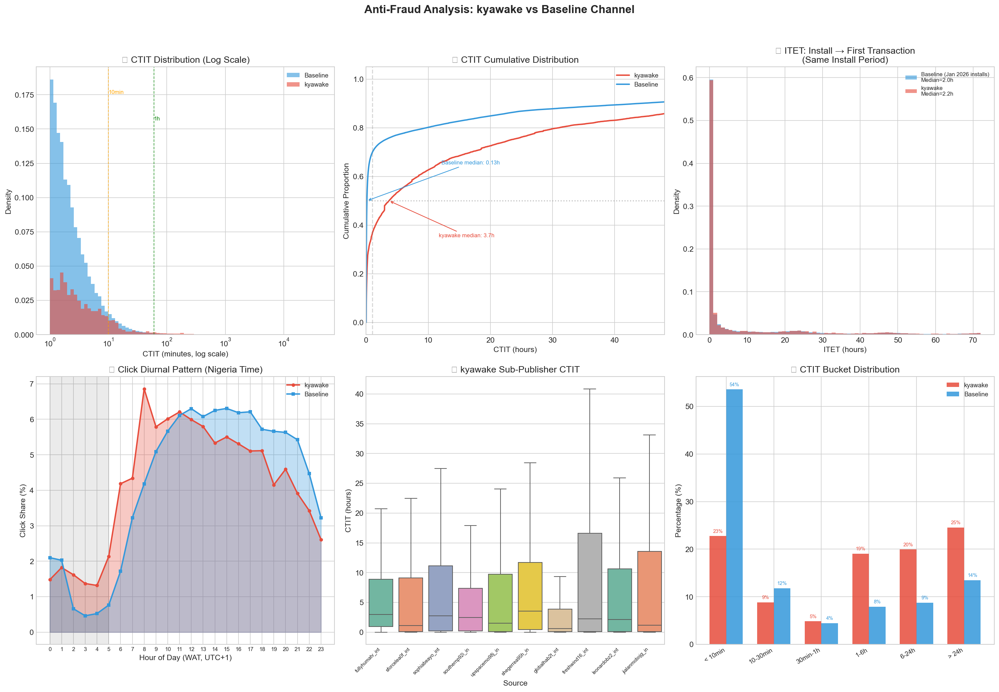
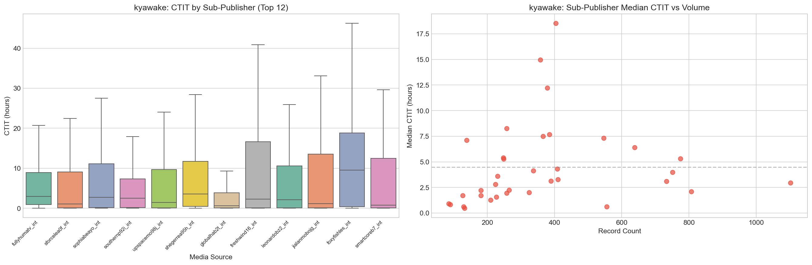
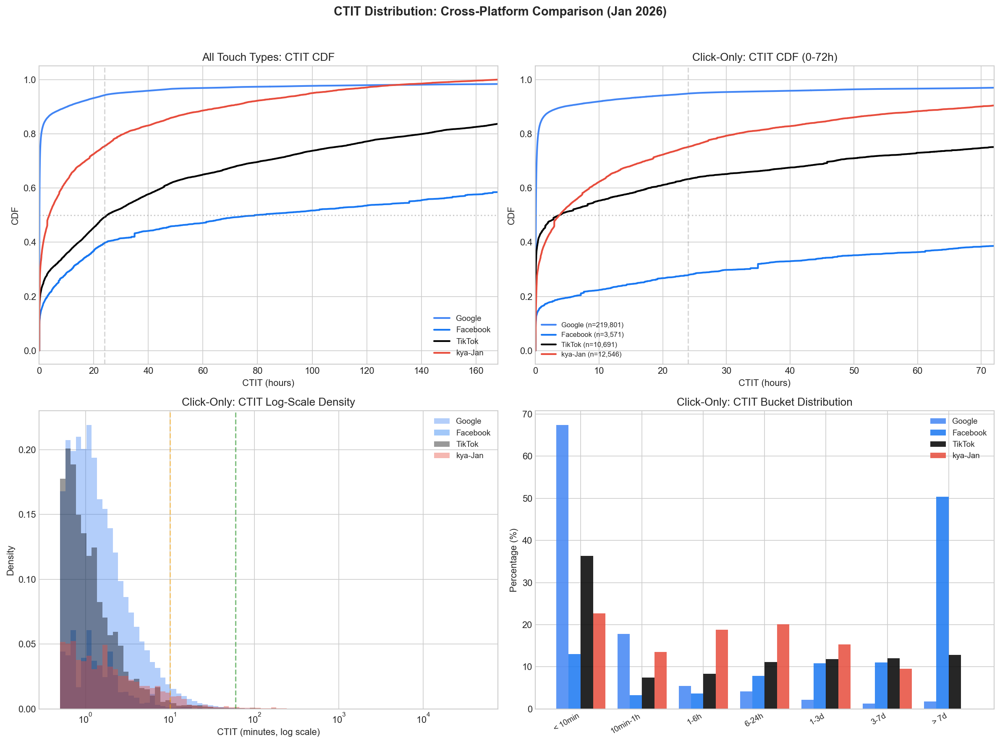
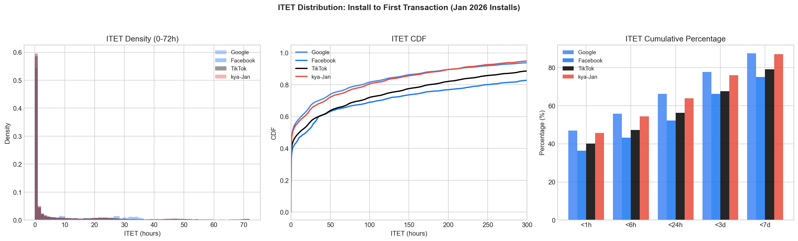
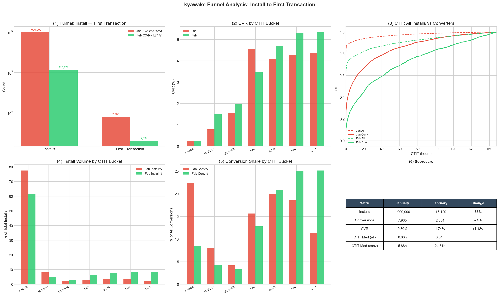
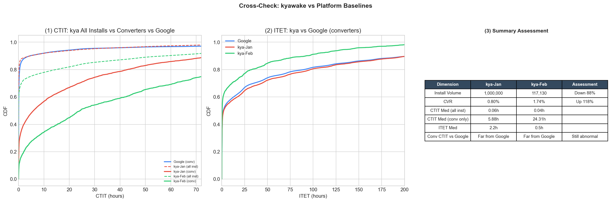
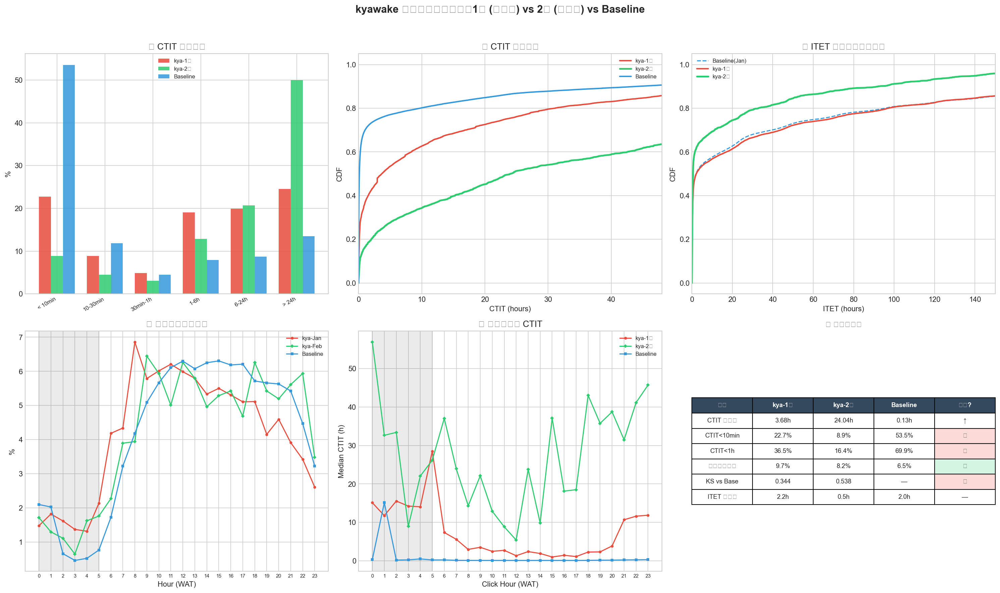

当 36 个子渠道呈现同一种异常：广告渠道反作弊特征分析
角色： Data Analyst，移动支付 Fintech（尼日利亚市场） 工具： Python (Pandas, Matplotlib/Seaborn)、AppsFlyer 原始数据、KS 检验 关键词： Click Flooding, CTIT, ITET, 归因质量, 反作弊, EDA
摘要
在核查 AppsFlyer 平台数据时，我发现一个网盟渠道旗下 36 个子渠道的 Click → Install → First_Transaction 数量呈异常阶梯状分布——正常情况下，不同子渠道应有差异化特征。
我拉取了 Google Ads / Facebook / TikTok 及该网盟数月原始数据，从 CTIT（点击-安装时间差）、ITET（安装-首次交易时间差）、昼夜节律、子渠道一致性 四个维度进行 EDA，并引入多平台基线校准避免"唯 Google 论"。最终发现：
- 网盟 CTIT 中位数是 Google 的 28 倍，分布缺乏正常渠道的"头部聚集"特征
- 但转化用户的 ITET 却与 Google 搜索用户几乎一致（2.2h vs 2.0h）——行为像自然用户，不像被广告影响的新客
- 全量安装 vs 转化用户 CTIT 差 98-608 倍，短 CTIT 安装 CVR 仅 0.23%
产出反作弊规则，协助优化归因逻辑，将网盟渠道 UAC 降低 20%。
一、背景：阶梯状分布的异常
发现过程
在日常核查 AppsFlyer 后台数据时，我注意到一个反常现象：某高怀疑度网盟下的多个子渠道拥有非常相似的 Click → Install → First_Transaction 数量。
正常来说，不同的子渠道代表不同的流量来源（不同的媒体、不同的广告主），它们的数据应该存在一定差异。而这种阶梯状的均匀分布暗示着一个统一的系统在人为分配流量。
分析框架
我收集了 AppsFlyer 数月原始数据，对可信渠道（Google / Facebook / TikTok）与嫌疑网盟进行系统性对比。核心分析框架：
flowchart TB
subgraph question ["业务问题"]
A["Last-Click 归因下\n网盟渠道的转化是否可信？"]
end
subgraph part1 ["Part 1：嫌疑网盟 vs Google"]
B["CTIT / ITET / 昼夜 / 子渠道一致性"]
end
subgraph part2 ["Part 2：多平台基线校准"]
C["Touch Type / 归因窗口 / 跨平台差异"]
end
subgraph part3 ["Part 3：漏斗分解"]
D["全量安装 vs 转化用户 / 分桶 CVR"]
end
subgraph synthesis ["合成"]
E["交叉验证 - 规则产出 - 归因优化"]
end
question --> part1 --> part2 --> part3 --> synthesis三个核心度量
| 度量 | 回答什么问题 | 不受什么干扰 |
|---|---|---|
| CTIT（Click → Install） | 归因的点击和安装之间有没有因果关系？ | — |
| ITET（Install → First_Transaction） | 用户安装后的行为像不像被广告"塑造"出来的新客？ | 几乎不受归因机制影响，是"用户质量指纹" |
| 分桶 CVR | 不同延迟段的安装，谁真正产生转化？ | 需要全量安装数据 |
二、核心发现：四维异常特征
2.1 CTIT：点击与安装之间缺乏因果关系
真实广告渠道中，用户点击广告后应在几分钟内完成安装，CTIT 分布应"头重尾轻"。
| 指标 | 嫌疑网盟 | Google（Baseline） |
|---|---|---|
| CTIT 中位数 | 3.68h | 0.13h（≈8min） |
| < 10min 占比 | 22.7% | 53.5% |
| KS 检验 | D=0.344, p≈0 | — |

网盟的 CTIT 中位数是 Google 的 28 倍，CDF 曲线近似线性上升——这是随机/均匀分布的特征，而非广告驱动的"点击即安装"模式。
2.2 ITET：转化用户行为像自然用户
| 指标 | 嫌疑网盟 | Google（同期） |
|---|---|---|
| ITET 中位数 | 2.2h | 2.0h |
两者几乎完全一致。对比其他渠道：TikTok 的 ITET 为 10.6h，Facebook 为 19.2h。网盟转化用户的安装后行为不处于内容/社交渠道的区间，而是恰好与最高意图的搜索型用户一致。
2.3 昼夜节律：凌晨 CTIT 飙升
- 网盟凌晨点击占比 9.7%（Google 仅 4.9%），但安装分布与 Google 一致
- 凌晨时段中位 CTIT 飙升至 10-30 小时：凌晨发出的点击要等十几小时后才"撞上"一个安装
安装是真人行为，但点击分布过于平坦 → 暗示全天候运行的脚本。
2.4 子渠道一致性：36 个"壳"
36 个子渠道名字各异，但全部呈现相同的异常 CTIT 模式，无一达到 Baseline 水平：
- 所有子渠道 CTIT < 10min 占比在 14%-32%，没有一个达到 Google 的 54%
- Kruskal-Wallis 检验 H=458.94, p≈0：有统计差异，但仅是程度差异，方向完全一致

三、多平台校准：避免"唯 Google 论"
CTIT 长不一定是作弊——不同渠道类型天然有不同特征。引入 Facebook 和 TikTok 建立分层基线：
| 渠道 | CTIT 中位（Click-only） | ITET 中位 | 渠道类型 |
|---|---|---|---|
| 4min | 1.7h | 搜索意图型 | |
| TikTok | 3.81h | 10.6h | 内容发现型 |
| 171h | 19.2h | 社交被动型 | |
| 嫌疑网盟 | 3.78h | 2.2h | ？ |

核心矛盾浮现： 网盟的 CTIT 形似 TikTok（内容发现型），但 ITET 却形似 Google（搜索高意图型）。一个网盟的 ITET 比 Facebook/TikTok 快 5-10 倍——除非获取的用户本就不是广告驱动的。

KS 检验确认：网盟 ITET 与 Google 的距离（D=0.040）远小于与 TikTok（D=0.086）或 Facebook（D=0.141）的距离。
四、漏斗分解：揭示"两条 CTIT 世界"
当拿到全量安装数据（而非仅转化用户）后，发现了被掩盖的关键结构：
| 指标 | 1月全量安装 | 1月转化用户 |
|---|---|---|
| 数量 | 1,000,000 | 7,965 |
| CTIT 中位数 | 0.06h (3.6min) | 5.88h |
| < 10min 占比 | 77.6% | 22.3% |
网盟全量安装的 CTIT 与 Google 几乎一致（0.06h vs 0.07h）——确实在产生快速安装。但这些安装的 CVR 极低：
| CTIT 桶 | 安装占比 | CVR |
|---|---|---|
| < 10min | 77.6% | 0.23% |
| 1-6h | 2.7% | 4.54% |
| > 1天 | 5.6% | 4.26% |
CVR 与 CTIT 呈正向阶梯关系——CTIT 越长，CVR 越高。这与正常渠道恰好相反（正常渠道中即点即装的高意图用户 CVR 最高）。

混合模型
第一层：真实广告投放（占安装 60-78%）
点击→快速安装（CTIT < 10min）
但 CVR = 0.23% → 质量极差，用途是充安装量
第二层：有机转化劫持（占转化 50-75%）
后台持续盲发点击 → 自然用户自行安装并交易时
恰好在 7 天窗口内有点击记录
CTIT 长（5-24h+），CVR 高达 4-5%
用途是贡献"转化业绩"

五、整改效果评估：结构幻觉
2月要求网盟调整投放策略后：
| 维度 | 1月 | 2月 | 判定 |
|---|---|---|---|
| CTIT 中位数（转化用户） | 3.68h | 24.04h | 恶化 554% |
| KS vs Baseline | 0.344 | 0.538 | 恶化 56% |
| 整体 CVR | 0.80% | 1.74% | ↑ 但... |
| < 10min 桶 CVR | 0.23% | 0.24% | 不变 |
| Top3 子渠道集中度 | 20.8% | 79.6% | 异常集中 |

CVR 翻倍是安装结构变化（少投了 88 万低质安装），不是用户质量提升——短 CTIT 桶 CVR 从 0.23% 到 0.24%，几乎不变。
六、产出与影响
反作弊规则
基于分析结果，产出以下归因规则优化建议：
| 维度 | 规则 | 依据 |
|---|---|---|
| CTIT 过滤 | 拒绝 CTIT > 24h 的点击归因 | 长 CTIT 转化高度暗示自然用户劫持 |
| 短 CTIT 过滤 | 拒绝 CTIT < 2s | 潜在 click injection |
| Touch Type 拆分 | 对高 VTA 平台必须分开分析 | 避免 VTA 拉长 CTIT 造成误判 |
| 网盟惩罚系数 | 降低网盟渠道归因权重 | Last-Click 易被利用 |
分层行为基线（可复用）
| 渠道类型 | CTIT 中位参考 | ITET 预期 |
|---|---|---|
| 搜索型（Google） | ~4min | ~1.7h（高意图） |
| 短视频型（TikTok） | ~3.8h | ~10.6h（中意图） |
| 社交型（Facebook） | ~171h | ~19.2h（低意图） |
商业影响
- 优化归因逻辑后，将网盟渠道 UAC 降低 20%
- 沉淀的监控框架（分桶 CVR、ITET 对比、子渠道离散度）可持续应用于新渠道评估
七、方法论讨论
分析边界
能证明什么 vs 不能证明什么
能做到的：
- 刻画渠道行为特征并与多平台基线对比
- 揭示"短 CTIT 不转化、长 CTIT 才转化"的反常结构
- 提供可复用的监控框架
不能做到的：
- 仅凭 CTIT 长不能单独"定罪"（Facebook 中位 CTIT 达 7 天仍是正常渠道）
- 短 CTIT CVR 极低也可能是投放策略差、素材质量低等非欺诈原因
- 缺少停投实验（关停网盟后观察 Organic 变化），无法从因果层面证明"劫持"
最核心的"不可解释"点
即便完全承认广告效果可以滞后，以下组合仍然难以用正常渠道行为解释：
- 78 万次快速安装的 CVR 仅 0.23%，两个月完全一致——如果广告在影响用户，快装人群不应该质量如此之差且毫无改善
- 长 CTIT 转化用户的 ITET 与 Google 搜索用户几乎一致（KS D=0.04）——"被广告影响的用户"行为恰好和最高意图的搜索用户一样
- 35 个子渠道各获得 3.7-4.0 万安装（CV < 0.1），流量分配的均匀度难以用多个独立来源解释
八、反思：作为 Portfolio 案例，这个项目展示了什么？
| 维度 | 本案例展示的能力 |
|---|---|
| 发现问题的敏锐度 | 从 AppsFlyer 后台的阶梯状分布主动发现异常，而非等业务方提需求 |
| EDA 工程能力 | Python (Pandas) 处理多渠道、数月量级的原始日志数据 |
| 多维度交叉验证 | 不依赖单一指标判断，四维度 + 四平台 + 漏斗分解逐层深入 |
| 分析客观性 | 明确标注分析边界（能证明什么、不能证明什么），不过度推断 |
| 商业落地 | 产出可执行的归因规则和监控框架，UAC 降低 20% |